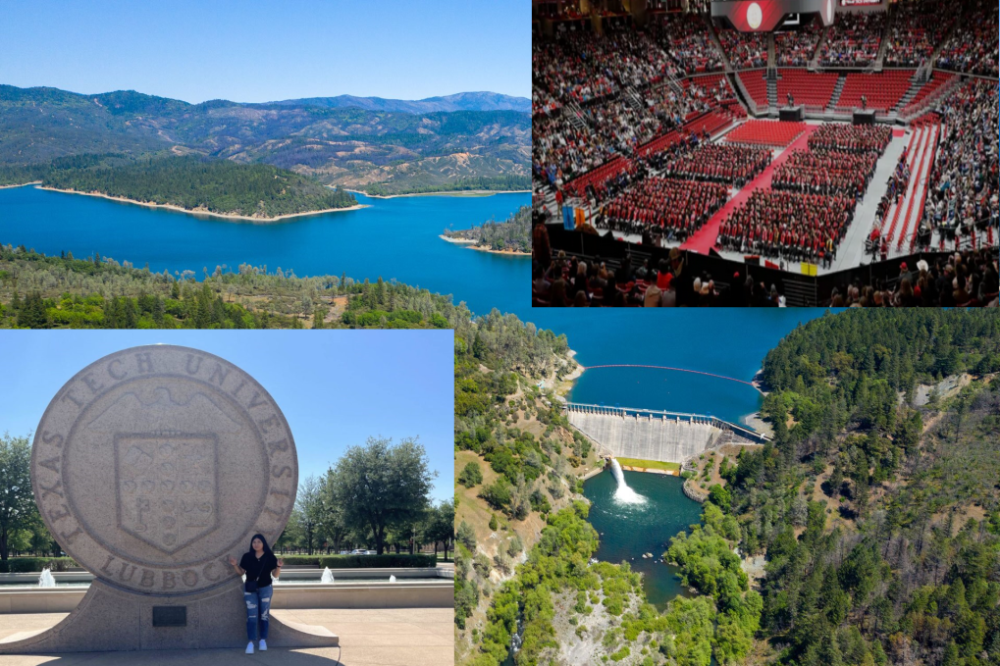
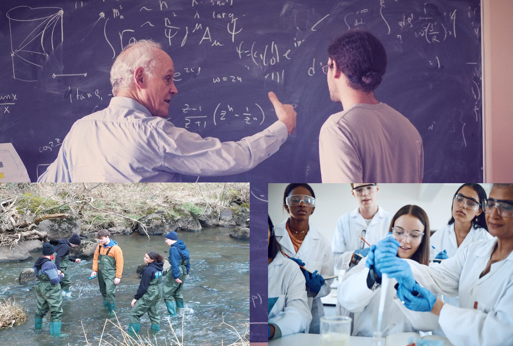
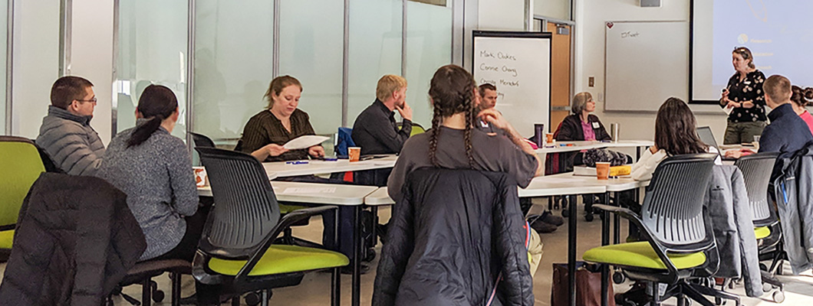
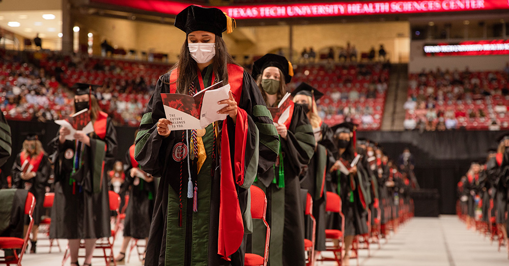
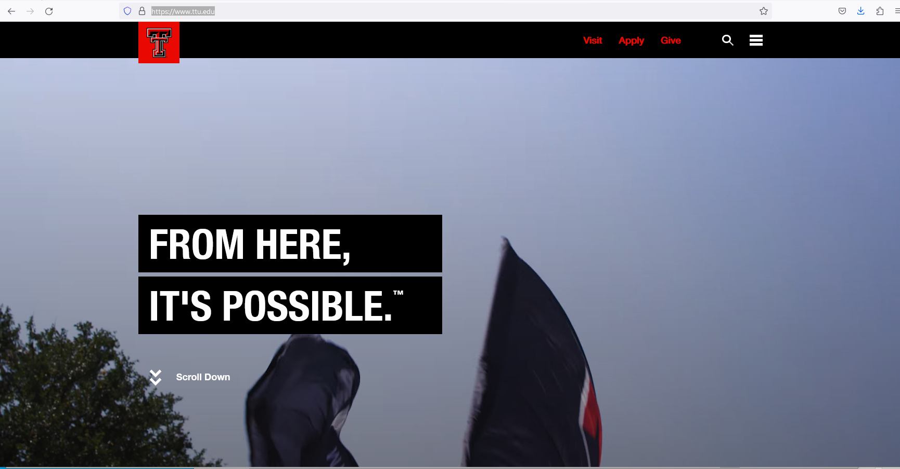

Water Resources Engineering in WCOE at Texas Tech University¶
A draft script for marketing at TTU
Start with some cool picture montage with water, engineering, and people

Voiceover: “Welcome to the Whitacre College of Engineering, where passion meets purpose, and innovation flows as freely as water.”
Then montage of some old dude using Apple iChalk to communicate, and youngsters doing actual work

Voiceover: “Are you ready to make a splash in the world of Water Resources Engineering? At the Whitacre College of Engineering, we invite you to dive into our graduate research program and unlock the door to a world of endless possibilities.”
Voiceover: “Our program is designed for those who are not just seeking a degree but are driven by a desire to solve the pressing challenges our world faces in managing water resources.”
Montage of faculty sitting in some boring meeting - should probably use TTU faculty, but the idea is to show us as happy engaged geniuses

Voiceover: “Our distinguished faculty members are at the forefront of water research. From hydrology to water quality management, our experts are pushing the boundaries of knowledge and inspiring the next generation of water engineers.”
Then on to actual research - here are some pretty high level topics; our current faculty have fingers in each which is kind of cool!
Research Themes (with links to faculty and/or products):¶
Climate Change Resilience in Water Management:
Investigate the impact of climate change on water availability, precipitation patterns, and extreme weather events. Texas Skew Update (includes recent large-magnitude events)
Develop innovative strategies for adapting water infrastructure to changing climate conditions.
Explore sustainable water management practices that can enhance resilience to climate-related challenges.
Integrated Water Resource Management:
Research methods for optimizing the use of surface water and groundwater resources. Inland Desalination Technologies; Groundwater Modeling
Develop integrated models for watershed management that consider the interconnectedness of various water sources. Stormwater Modeling (Watershed Scale)
Explore policies and governance structures that promote sustainable and equitable water allocation. Natural Systems
Water Quality and Contaminant Remediation:
Study the sources and transport mechanisms of water pollutants, including emerging contaminants. Fate and Transport
Develop advanced technologies for water treatment and remediation. Treatment&Emerging Contaminants
Investigate the impact of urbanization, industrial activities, and agricultural practices on water quality. Natural Systems
Smart Technologies for Water Monitoring and Management:
Explore the use of sensors, remote sensing, and data analytics for real-time water quality and quantity monitoring. Fixture-Level Monitoring
Develop smart water infrastructure that can respond dynamically to changing conditions. HUMS Demonstrator
Investigate the potential of artificial intelligence and machine learning in optimizing water distribution and treatment systems. Machine Learning
Sustainable One Water Planning:
Examine the challenges of water supply and demand in rapidly growing urban areas. Network Modeling
Research green infrastructure solutions for stormwater management and urban flooding. Green Infrastructure
Explore the integration of water-sensitive urban design principles to create resilient and sustainable urban water systems. Green Infrastructure Modeling (Neighborhood Scale)
These research themes encompass a range of emerging concerns in water resources engineering, from the impacts of climate change to the development of smart technologies for efficient water management. Researchers in these areas contribute to addressing the evolving challenges in water resources and ensuring a sustainable and resilient water future. The selected links above are to provide a sample of our faculty’s skills and research products.
Voiceover: “At Texas Tech University, we believe in the power of collaboration. Our partnerships with industry leaders provide our students with unique opportunities for internships and real-world projects, ensuring they graduate with the skills and connections needed to make a difference.”
A short pitch to illustrate courses we offer, but not too detailed, mostly that we have a set of core courses to provide future employers with an expectation of some current marketable skills, and then speciality courses.
Program features and curriculum¶
Voiceover: “Our comprehensive curriculum covers a spectrum of topics, from advanced hydrodynamics to sustainable water resource development. You’ll have the chance to tailor your studies to your interests, ensuring you graduate with the expertise needed to tackle the complexities of water engineering.”
Our courses for a Master’s Degree are comprised of core courses to prepare all our graduates in industry relevant skills, and electives which are individually selected based on interest and professor availability.
Core Courses¶
CE 5360 Open Channel Hydraulics
CE 5361 Surface Water Hydrology
CE 5363 Groundwater Hydrology
CE 5366 Water Resources Management
Geographic Information Systems course (approved by advisor)
Engineering Electives¶
CE 5313 Probabilistic Methods of Civil Engineering
CE 5319 Machine Learning for Civil Engineers
CE 5349 Performance-Based Engineering
CE 5362 Surface Water Modeling
CE 5364 Groundwater Transport Phenomena
CE 5368 Surface Water Quality Modeling
CE 5391 Advanced Water Treatment
** Other environmental, civil, or other engineering graduate course approved by graduate advisor
The Doctorate Degree has no specific course list, but equivalency in the core courses above are expected plus a coherent specialization in support of a research theme.

Voiceover: “Join us at Texas Tech University, where your journey in Water Resources Engineering begins. Together, let’s create waves of change and shape a sustainable future.”

Voiceover: “Apply now and be part of a community that’s making a difference. Texas Tech University, where innovation flows, and your future takes shape.”